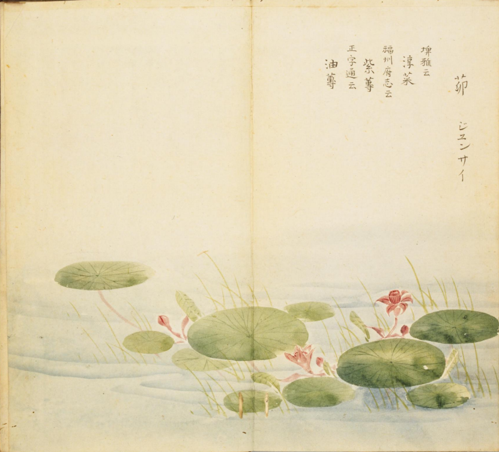
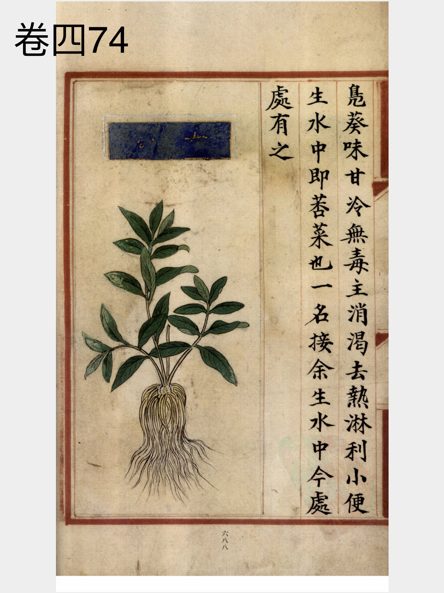
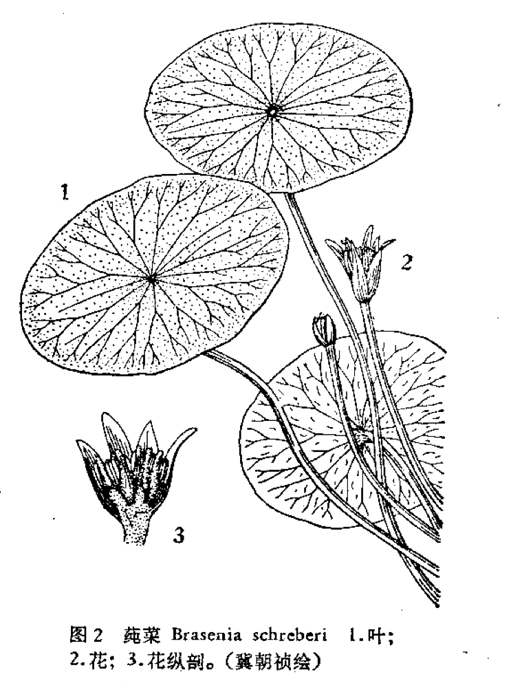

出现篇目
别名 凫葵（《唐本》）、水葵（《马融传》）、水镜草（《土宿本草》）、靥子菜（《野菜谱》）、金莲子。接余。
古代记载 《毛诗故训传》
茆，凫葵也。（《毛传》注《泮水》）
《毛诗草木鸟兽虫鱼疏》
茆，与荇叶相似，叶大如手，赤圆，有肥者着手中滑不得停，茎大如匕柄，叶可以生食又可，滑美，南人谓之莼菜，或谓之水葵，诸陂泽水中皆有。
《毛诗正义》
正义曰：陆机《疏》云：茆与荇菜相似，叶大如手，赤圆。有肥者，著手中滑不得停。茎大如匕柄。叶可以生食，又可鬻，滑美。江南人谓之莼菜，或谓之水葵，诸陂泽水中皆有。（《毛诗正义》疏《泮水》）
《诗集传》
茆、鳬葵也。葉大如手、赤圓而滑。江南人謂之蓴菜者也。（《诗集传》集注《泮水》）
《本草纲目》
"恭曰∶凫葵即荇菜也。生水中。
叶似而茎涩，根甚长，花黄色。郭璞注《尔雅》云∶丛生水中。叶圆在茎端，长短随水深浅。江东人食之。陆玑《诗疏》云∶荇茎白，而叶紫赤色，正圆，径寸余，浮在水上。根在水底，大如钗股，上青下白，可以按酒。用苦酒浸其白茎，肥美。今人不食，医方亦鲜用之。
时珍曰∶荇与 ，一类二种也。并根连水底，叶浮水上。其叶似马蹄而圆者，荇也；叶似而微尖长者，荇也。夏月俱开黄花，亦有白花者。结实大如棠梨，中有细子。按∶宁献王《庚辛玉册》云∶凫葵，黄花者是荇菜，白花者是白苹即水镜草，一种泡子名水鳖。虽有数种，其用一也。其茎叶根花，并可伏硫、煮砂、制矾。此以花色分别苹、荇，似亦未稳，详见苹下。
当代记载 《中国植物志》
"莼菜（ Brasenia schreberi），睡莲科、莼属植物。多年生水生草本；根状茎具叶及匍匐枝。叶椭圆状矩圆形，长3.5-6厘米，宽5-10厘米，下面蓝绿色，两面无毛，从叶脉处皱缩；叶柄长25-40厘米，和花梗均有柔毛。花直径1-2厘米，暗紫色。花期6月，果期10-11月。产江苏、浙江、江西、湖南、四川、云南。生在池塘、河湖或沼泽。苏联、日本、印 度、美国、加拿大、大洋洲东部及非洲西部均有分布。

<细井徇>

<补遗雷公炮制便览>

<中国植物志>